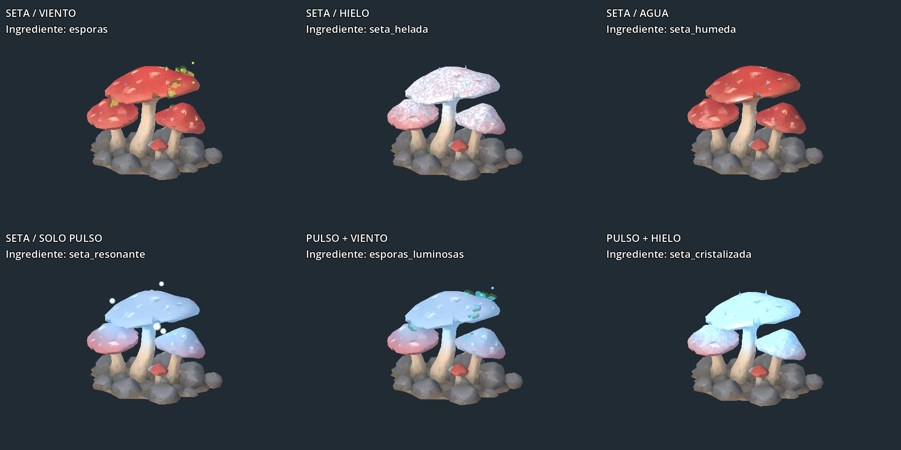

24/11/2026. Lote aplicado por código, sin modelos ni texturas nuevos. Integrado en Recolectable3D; las variantes roja, azul y marrón mantienen sus modelos y su acierto.

| Acción | Resultado al recoger | Presentación |
|---|---|---|
| Viento | esporas | Contracción breve de la parte alta por shader; nube verde amarillenta y granos que siguen la dirección del impacto. |
| Hielo | seta_helada | Escarcha progresiva, brillo frío y pequeños cristales sobre puntos reales de los sombreros. Persiste hasta recoger. |
| Agua | seta_humeda | Gotas que caen y superficie más oscura, brillante y húmeda. Las gotas terminan; el estado de material permanece. |
| Pulso con madura=si | seta_resonante | Sombreros azulados con emisión suave, conservando pies y rocas. |
| Pulso → viento | esporas_luminosas | Esporas cian con emisión suave. |
| Pulso → hielo | seta_cristalizada | Escarcha luminosa y cristales más largos. |
Se conectan las filas ya existentes de fuentes.tsv añadiendo seta_resonante al catálogo de plantas y usando su tabla solo cuando una seta base ha madurado. La resonante admite únicamente viento e hielo; no agua ni fuego. Los dos resultados son terminales. Una seta transformada directamente con un elemento no puede madurar después. Se mantiene la condición madura=si para el pulso.
Recoger sigue entregando una unidad del ingrediente que muestra el estado. Rebrotar crea una presentación nueva, sin humedad, escarcha o partículas heredadas. Una planta no disponible no reacciona. No se modifican las reacciones de flores, raíces, algas ni el resto de plantas.
presentacion/reaccion_seta_3d.gd separa la presentación del ingrediente. Usa copias propias de los materiales, el shader común de Ocluso3D y puntos de la geometría de las copas para colocar gotas/cristales. Conserva texturas y normales del modelo. Viento y agua retiran sus partículas a los 1,8 s; el hielo conserva nueve pequeños cristales. Viento usa doce granos y diez bocanadas de HumoToy. No añade cuerpos ni luces permanentes; reutiliza la luz temporal del pulso.
Los tres elementos tienen su sonido de catálogo y sustituyen las motas doradas genéricas en estas reacciones de setas. Fuego y rayo mantienen la presentación anterior. La contracción usa la altura de la malla; los modelos futuros con otra distribución deberán revisarse visualmente.
prueba_reaccion_seta.gd: variantes roja/azul/marrón, ingredientes, materiales visibles, animación, retirada de partículas, colisión, recolección real a Estado, pulso, resultados terminales, rebrote y disponibilidad. Regresiones prueba_materia_reactivos_3.gd y prueba_materiales_cueva.gd: cero fallos.
Catálogo general: prueba_bd conserva cinco fallos previos: espera 105 objetos donde hay 106 y presupone una mochila de ocho huecos. Un control con el catálogo sin la nueva entrada resonante reproduce exactamente los mismos cinco fallos. Las comprobaciones de plantas y de la nueva tabla resonante pasan. No se han ajustado esas expectativas ajenas a este lote.
Capturas Forward+ con controladores reales y tiempos fijados, no una partida completa. En la cadena se espera a que termine el destello inicial del pulso antes de lanzar el segundo elemento. Capturador herramientas/captura_reaccion_seta.gd. Salidas, logs y control de catálogo en output/reacciones_setas_2026-11-24/. Advertencias de caché/PlayLog user:// en este entorno. Sin commit.